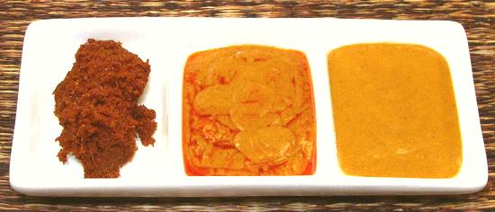

Thai Red Curry Paste vs. Sauces

[Krueng Gaeng Peht (Paste)]
Red Curry is the most popular in Thailand. It is made using a Red Curry
Paste, in hotness half way between Green Curry Paste (hotter) and Yellow
Curry Paste (less hot). On this page, I would have liked to compare the
Clovegarden recipe to commercial products, but I have yet to find actual
Red Curry Paste in the kind of markets most Americans shop at - What I've
found is "Thai Red Curry Sauce", two of which are in the photo. I will
add pastes when I find them.
"Sauce" products of this sort are not native to Thailand, but both
these brands claim to let you make "authentic" Thai curries. Neither will
work in actual Thai recipes, nor any Thai recipe on the Clovegarden site.
The first step in making a real Thai Red Curry is to heat Coconut Cream,
scooped from the top of coconut milk (fresh or canned). The curry paste
is then stirred in and cooked, stirring until oil begins to separate.
Then other ingredients are stirred in, including the Coconut Milk. These
"sauces" try to eliminate this first step by including dehydrated coconut
milk in the products. You start as a stir fry, and add the sauce near the
end of cooking. In my opinion, this trades a small amount of work for a
very significant compromise in flavor.
More on Sauces & Condiments.
Clovegarden Red Curry Paste:
Left in photo.
This is a true Curry Paste you can make at home. It's made with fresh
ingredients in accordance with Thai practice (except for some use of
modern equipment). It is redolent with fresh flavors, has enough chili
heat to be effective in a recipe, and is actually red. Our recipe will
be found at Thai Red Curry
Paste. Ingred: Lemon Grass, Galangal, Kaffir Lime Peel,
Cilantro Stems, Garlic, Shallots, Coriander Seeds, Cumin Seeds,
Peppercorns, Thai Chilis, California Chilis (for color), Shrimp Paste,
Salt.
Kikkoman Thai Red Curry Sauce:
Center in
photo. This product has a reasonable amount of regional flavor, some
body, and a tiny bit of texture, but is quite weak in chili heat. It can
be used in modified Thai recipes, but not "as written". While it strives,
with reasonable success, for authentic flavor, this is done with minimum
resort to fresh ingredients. Ing: Coconut MIlk Powder (Coconut Milk
[Tree Nut], Maltodextrin, Sodium Caseinate [Milk]), Red Curry Paste
(Chili Pepper, Salt, Roasted Garlic, Onion Puree, Canola Oil, Spices,
Citric Acid, Kaffir Lime Oil, Lemongrass Oil, Natural Extractives of
Chilie Peppers), Sugar, Soybean Oil, Garlic, Contains 2% or less of the
following: Modified Corn Starch, Alcohol, Fish Sauce (Anchovy Extract,
Salt, Water), Vinegar, Paprika, Onion, Jalapeno Pepper, Sodium Acid
Sulphate, Dehydrated Onion, Soy Lecithin, Yeast Extract, Salt, Cultured
Dextrose, Xanthan Gum, Spice, Turmeric, Citric Acid, Stevia Extract.
2017 US $3.79 / 10.9 ounces
Trader Joe's Thai Red Curry Sauce:
Right in photo. This
product is totally lamentable - the bottle declares "delicate blend"
of flavors, but "weak" is what it actually means. It lacks authentic
ingredients, even as oils or extracts, has only faint chili heat, and
is sorely lacking in the flavors of Thailand. It does contain some
ginger and onion, but galangal and shallots are the correct flavors.
It tastes kind of like some "secret sauce" used on a fast food hamburger,
or a thick salad dressing. Ingred: Water, Dehydrated Coconut Milk
(Coconut, Sodium Caseinate [Milk]), Red Chili Puree, Onion, Garlic,
Sugar, Canola Oil, Salt, Cornstarch, Spices, Ginger, Autolized Yeast
Extract, Onion Powder, Egg Yolks, Citric Acid,
Natural Flavors, Xanthan Gum. 2017 US $2.99 / 11 oz.
sa_thairz 170123 - www.clovegarden.com
©Andrew Grygus - agryg@clovegarden.com - Photos
on this page not otherwise credited © cg1
- Linking to and non-commercial use of this page permitted